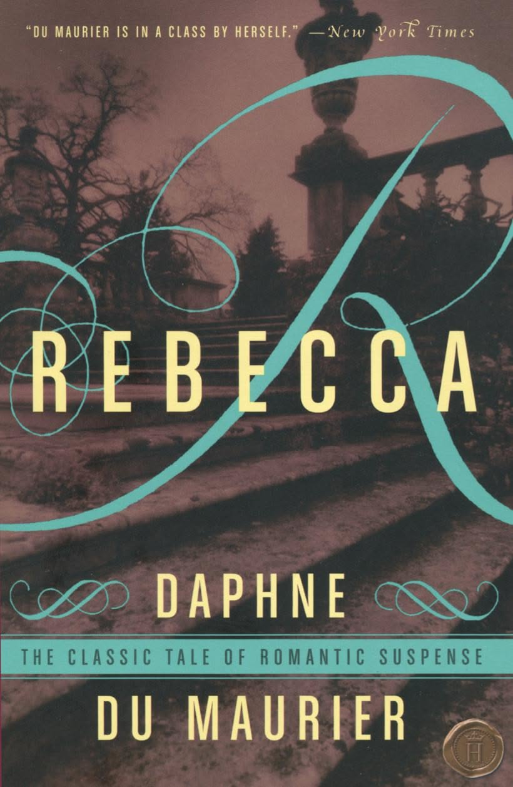
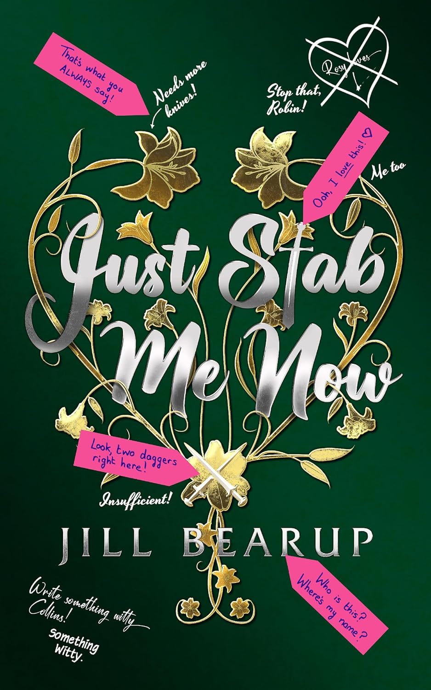

Rebecca
Daphne du Maurier
A tense, slow burning novel, Rebecca follows a young woman haunted by the
memory of her husband's first wife. Du Maurier dives deep into the unnamed
protagonists psycho-drama with lyrical and evocative writing.

Just Stab Me Now
Jill Bearup
A highly entertaining read about a romance novel heroine who refuses to
follow the authors wishes. Both a send up and love letter to the genre,
while giving a glimpse into what goes on in an authors head.

Hunters and Collectors
M.Suddain
This book had a great impact on my sensibilities, silly with the plot,
serious with the characters. Misanthrope and intergalactic food critic,
John Tamberlain, is on the hunt for a mythical hotel, the Hotel Grand
Skies. The only evidence of it's existence is a single photo.